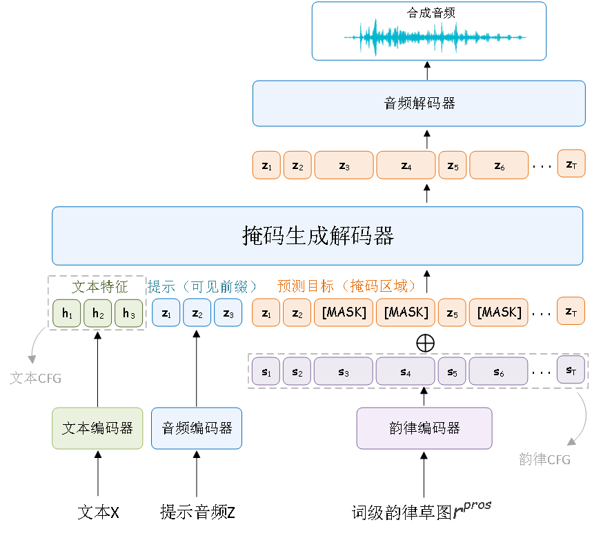

SketchGCT
Expressive Speech Synthesis Using Prosodic Sketches as Control Conditions
[Code] [Paper]
Zhongyuan Fu1
1College of Computer Science, Nankai University
Abstract. Zero-shot text-to-speech can reproduce a target speaker's timbre from a short speech prompt, but fine-grained prosody control over phrasing, emphasis, speaking rate, and intonation remains difficult to specify and verify. This thesis formulates fine-grained controllable zero-shot TTS as a structured conditional generation problem and proposes SketchGCT (Sketch-Guided Codec Transformer). The model generates text-aware discrete speech tokens, uses the prompt speech to preserve speaker identity, represents target prosody with modular pitch and energy sketches, and injects these sketches into masked iterative refinement so that timing and prosodic details can be adjusted during generation. An evaluation protocol is built around content fidelity, speaker similarity, naturalness, and prosody-control consistency, covering reference-sketch transfer on Seed-TTS-Eval, manually drawn sketch control, and ablation studies. Experiments show that SketchGCT achieves the highest pitch and energy correlations on both English and Chinese test sets. In human evaluation, it also obtains stronger naturalness, speaker similarity, and control-consistency scores than the compared systems. Ablation results further show that joint pitch and energy sketches improve prosody fidelity while keeping speaker similarity stable. The proposed approach demonstrate that explicit prosody sketches provide an interpretable and editable local control path for zero-shot speech synthesis without substantially degrading speech quality or speaker identity.
Contents
System Overview

Figure 1. Overview structure of the proposed SketchGCT. Paired speech and text data are used for training. User-supplied text and drawn pitch and energy sketch are used as inputs during inference.
Speech Synthesis Conditioned on Sketches
| Text | Sketches | Audio Samples |
|---|
Speech Synthesis with Fine-grained Prosody Control
| Target | Sketches | Audio Samples |
|---|
Speech Synthesis with Text Only
| Text | Prompt Text | Audio Samples |
|---|